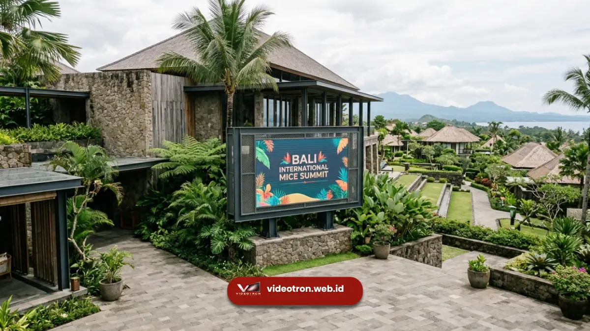

Videotron Bali adalah layanan sewa layar LED raksasa yang digunakan untuk mendukung visual event korporat, MICE, dan brand activation di Pulau Dewata. Layanan ini mencakup unit indoor maupun outdoor dengan resolusi tinggi. Videotron Bali menjadi solusi utama bagi perusahaan yang ingin menghadirkan tampilan visual besar dan tajam pada acara mereka.
Poin Penting Layanan Videotron Bali:
- Videotron Bali cocok untuk konser, seminar, MICE, dan brand activation korporat.
- Tersedia unit indoor dan outdoor dengan pixel pitch yang dapat disesuaikan kebutuhan.
- Proses sewa mencakup survei lokasi, instalasi, operasional, hingga pembongkaran.
- Layanan videotron.web.id melayani seluruh area Bali dengan tim teknis berpengalaman.
- Konsultasi kebutuhan dapat dilakukan sebelum menentukan spesifikasi layar.
- 1. Apa Itu Videotron dan Mengapa Dibutuhkan di Bali?
- 2. Untuk Acara Apa Saja Videotron Bali Digunakan?
- 3. Mengapa Memilih Layanan Videotron Bali dari Kami?
- 4. Apa Keunggulan Videotron Bali Dibanding Layar Konvensional?
- 5. Bagaimana Proses Sewa Videotron di Bali Berlangsung?
- 6. Faktor yang Memengaruhi Kebutuhan Videotron di Bali
- 7. Apakah Lokasi Acara Memengaruhi Jenis Videotron yang Digunakan?
- 8. Kesalahan Umum saat Menyewa Videotron di Bali
- 9. Tips Memaksimalkan Tampilan Videotron pada Event Korporat
- 10. Kesimpulan
Apa Itu Videotron dan Mengapa Dibutuhkan di Bali?
Videotron adalah layar LED berukuran besar yang tersusun dari modul-modul panel dan mampu menampilkan gambar, video, maupun teks secara dinamis dalam kondisi pencahayaan apa pun.
Bali sebagai destinasi MICE (Meeting, Incentive, Convention, Exhibition) internasional membutuhkan media visual berskala besar yang mampu menjangkau audiens dalam jumlah besar di ruang terbuka maupun tertutup.
Bali dikenal sebagai salah satu tujuan utama pariwisata MICE di Indonesia, dengan kunjungan wisatawan mancanegara dan domestik yang terus tercatat oleh Badan Pusat Statistik Provinsi Bali sepanjang periode 2023-2024.
Pertumbuhan sektor pariwisata dan event tersebut turut mendorong permintaan terhadap perangkat visual berskala besar seperti videotron pada berbagai acara korporat, pameran, dan festival budaya di Bali.
Untuk Acara Apa Saja Videotron Bali Digunakan?
Videotron Bali umumnya digunakan pada acara konser musik, seminar nasional maupun internasional, gala dinner korporat, product launching, exhibition, hingga upacara keagamaan berskala besar.
Setiap jenis acara memiliki kebutuhan spesifikasi layar yang berbeda, mulai dari ukuran panggung, jarak pandang audiens, hingga kondisi pencahayaan lokasi. Detail mengenai jenis acara dan kesesuaian unit dapat Anda baca di artikel panduan sewa videotron Bali.
Mengapa Memilih Layanan Videotron Bali dari Kami?
Layanan videotron Bali dari videotron.web.id dirancang untuk memenuhi kebutuhan visual event berskala korporat dengan standar teknis yang terukur.
Tim kami menangani seluruh proses mulai dari konsultasi awal, survei lokasi, hingga operasional layar selama acara berlangsung.
Apa Keunggulan Videotron Bali Dibanding Layar Konvensional?
Videotron memiliki keunggulan berupa kecerahan tinggi yang tetap terbaca di bawah sinar matahari, fleksibilitas ukuran sesuai kebutuhan panggung, serta kemampuan menampilkan konten dinamis secara real time.
Berbeda dengan spanduk atau backdrop statis, videotron memungkinkan perubahan konten secara instan sesuai rundown acara.
Bagaimana Proses Sewa Videotron di Bali Berlangsung?
Proses sewa videotron Bali umumnya dimulai dari konsultasi kebutuhan acara, survei lokasi untuk menentukan spesifikasi teknis, penjadwalan instalasi sebelum hari-H, pengoperasian layar oleh teknisi selama acara, hingga pembongkaran setelah acara selesai. Tahapan ini penting agar tampilan visual berjalan lancar tanpa kendala teknis.
Faktor yang Memengaruhi Kebutuhan Videotron di Bali
Beberapa faktor menentukan spesifikasi videotron yang tepat untuk sebuah acara di Bali, di antaranya lokasi acara (indoor atau outdoor), jarak pandang audiens terjauh, anggaran yang tersedia, serta durasi penggunaan layar. Untuk informasi mendalam mengenai simulasi biaya, Anda dapat menyimak ulasan harga sewa videotron Bali.
Apakah Lokasi Acara Memengaruhi Jenis Videotron yang Digunakan?
Lokasi acara sangat memengaruhi jenis videotron yang direkomendasikan. Acara outdoor di area pantai atau lapangan terbuka membutuhkan unit dengan tingkat kecerahan dan ketahanan cuaca yang lebih tinggi.
Sementara acara indoor seperti ballroom hotel dapat menggunakan unit dengan pixel pitch lebih rapat untuk hasil visual yang lebih detail dari jarak dekat.

Penggunaan unit videotron outdoor berlayar besar pada event outdoor beach resort di Bali.Kesalahan Umum saat Menyewa Videotron di Bali
Beberapa kesalahan yang sering terjadi antara lain menentukan ukuran layar tanpa mempertimbangkan jarak pandang audiens, memilih spesifikasi tanpa survei lokasi terlebih dahulu.
Serta tidak memperhitungkan cadangan waktu untuk instalasi dan uji coba sebelum acara dimulai. Perencanaan yang matang sejak awal membantu meminimalkan risiko kendala teknis pada hari pelaksanaan.
Tips Memaksimalkan Tampilan Videotron pada Event Korporat
Konten yang ditampilkan pada videotron sebaiknya dirancang dengan kontras warna yang jelas dan ukuran teks yang mudah terbaca dari jarak jauh.
Penyesuaian kecerahan layar terhadap kondisi pencahayaan lokasi turut memengaruhi kualitas tampilan visual yang diterima audiens.
Kesimpulan
Videotron Bali merupakan solusi visual yang relevan untuk berbagai skala event korporat, MICE, dan brand activation di Pulau Dewata. Pemilihan spesifikasi yang tepat, didukung survei lokasi dan proses instalasi profesional, menjadi kunci keberhasilan tampilan visual sebuah acara.
Untuk kebutuhan sewa videotron di seluruh area Bali, tim videotron.web.id siap membantu konsultasi kebutuhan acara Anda mulai dari perencanaan hingga hari pelaksanaan. Hubungi videotron.web.id sekarang untuk mendapatkan penawaran layanan videotron Bali sesuai kebutuhan acara Anda.

Hawa Nadira
LED Technology Consultant dan Visual Educator
Konsultan dan spesialis solusi display digital berdedikasi tinggi yang fokus membagikan panduan edukatif mengenai penerapan teknologi layar LED videotron untuk kebutuhan interior modern di Indonesia.